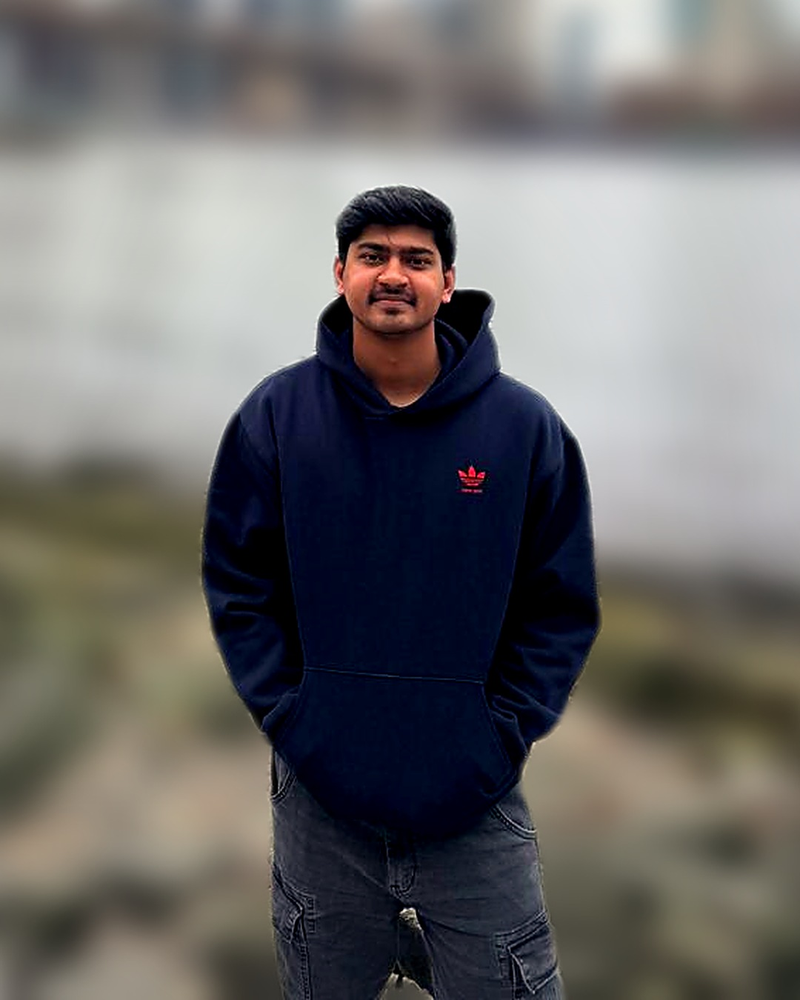

M.S. Electrical Engineering — VLSI · University of Cincinnati
Abbas Rohawala
I localize errors in fabricated silicon by comparing it against a golden reference, and I build the hardware Trojans that stress-test the algorithm that finds them.

Reduced the suspect-net list by 98.5% via embedded runtime monitors and DFT scan-chain re-synthesis — correctly isolating the injected buggy net among the 15.
about
Currently in the lab
I'm a Graduate Research Assistant in the DDEL Lab at the University of Cincinnati, working under Dr. Ranga Vemuri on NSF- and industry-funded (CHEST, IUCRC-1916762) hardware security and post-silicon debug research. I run full RTL-to-GDSII flows in Cadence on a 45nm process, using embedded runtime monitors, DFT/ATPG, and JasperGold formal fanin-cone analysis for bug localization.
Outside the lab, I design and close timing on my own ASIC projects end to end: a 512-input Programmable Logic Tree closed at 442.6 MHz with a UVM-verified testbench, and a fully pipelined sorting accelerator closed at 1.32 GHz. I also TA Intro to VLSI Design, mentoring students through the same RTL-to-GDSII flow.
Currently looking for a full-time Physical Design / DFT / Timing Closure role where I can bring this hands-on tapeout experience to an industry chip team.
- Lab
- DDEL Lab, University of Cincinnati
- Advisor
- Dr. Ranga Vemuri
- Focus
- RTL-to-GDSII physical design, timing closure & post-silicon debug at 45nm
- Looking for
- Full-time Physical Design / DFT / Timing Closure roles
experience
Professional experience
- Ran full RTL-to-GDSII flows in Cadence GPDK045 45nm with integrated runtime monitors and trace buffers, as part of an NSF- and industry-funded project (IUCRC-1916762, CHEST).
- Synthesized and closed timing for an 8-bit SRAM processor (751.1 MHz) and a 32-bit OpenRISC core (206.6 MHz).
- Built SDC constraints and performed iterative setup/hold timing closure before and after CTS.
- Integrated scan chains and generated Modus stuck-at ATPG patterns (800 patterns, 99.99% test-mode fault coverage); correlated STA with post-layout gate-level simulation.
- Applied JasperGold formal fanin-cone analysis to localize an injected bug for post-silicon debug.
- Mentored students through RTL-to-GDS flows including synthesis, STA, floorplanning, place & route, CTS, and Innovus signoff.
- Helped students debug timing analysis and post-layout simulation using Cadence Xcelium.
- Performed preventive and breakdown maintenance of plant electrical systems, including motors, drives, and control panels.
key_projects
Selected projects
Hardware Array Sorter (HAS): High-Speed Sorting Accelerator
- Designed and verified a fully pipelined odd-even transposition sorting network that sorts N 4-bit words in Verilog.
- Built an automated RTL-to-GDSII driver that swept the synthesis clock and stepped sorter width N up to 20 to fit a fixed 180×180 μm die.
- Closed timing at 1.32 GHz under full SDC constraints in Cadence Genus (GPDK045 45nm), with DFT cells inserted for structural debug.
8-bit CPU with SRAM Integration — Design & Security Verification
- Built a synthesizable 8-bit CPU (128-instruction ISA) with integrated 256-byte SRAM, carried through a full RTL-to-GDSII flow in Cadence GPDK045 45nm.
- Converted assertion-based security properties into synthesizable hardware monitors for real-time, self-checking runtime verification.
- Closed timing at 751.1 MHz; inserted full scan chains and generated Modus stuck-at ATPG patterns (800 patterns, 99.99% test-mode fault coverage).
Parameterized Programmable Logic Tree
- Designed a bit-sliced, parameterized 512-input binary-tree Programmable Logic Tree of programmable LUTs for FPGA/AI workloads.
- Delivered a compact 250×250 μm layout at 84.9% density (13,326 cells), reaching 0 DRC on GPDK045 45nm.
- Closed timing at 442.6 MHz, functionally verified with a UVM environment reaching 100% coverage across 204 checks.
Design Automation Suite: Placement, Routing & Logic Minimization
- Standard-cell placer (simulated annealing) minimizing HPWL across 15 benchmarks, scaling to 25,000-cell netlists while preserving legality.
- Developed a multi-layer (M2–M9) negotiated-congestion global router using A* search with PathFinder-style rip-up-and-reroute, achieving overlap-free legal routing on netlists up to 60,000 nets.
- Two-level logic synthesis and minimization flow: tautology checking (cofactor/unate reduction), complement generation, and PLA minimization.
technical_skills
Skills & tools
education
Education
certifications
Certificates
- Cadence Jasper Formal Fundamentals v2403
- Cadence SystemVerilog Assertion v5.1
- Cadence Verilog Language and Applications v28.0
- CS50's Introduction to Programming with Python